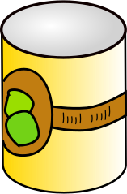
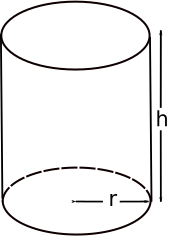

Activity: Soup Can

"Pi Soups Incorporated" want to sell soup in cylindrical cans that contain 400 ml (milliliters)
They also want to minimize the amount of metal in each can.
As the local mathematics expert it is your job to help them!
Volume and Surface Area
|  | For a cylinder of height h and base radius r:
Which can be abbreviated to:
|
Thickness of Metal
Let us assume that the metal has uniform thickness, so we just want to find
The smallest surface area that will hold 400 ml
Let us also assume that the thickness of the metal does not affect the volume (i.e. it is very small in comparison to the size of the can.)
To
solve this we will work
in centimeters, so:
- the area is measured in square centimeters (cm2) and
- the volume is measured in cubic centimeters (cm3).
This makes it easy, as 1 ml is the same as a volume of 1 cm3 - see the page Metric Volume.
So V = 400
This gives us the formula 400 = πr2h
Make h subject of the formula :
Substitute this value for h into the formula for A:
Now we know the Area in terms of the Radius:
A = 2πr2 + 800/r
This is our very simple Mathematical Model of the soup can.
Your Turn Now!
I have helped you enough. Now it is your turn.
You can use the formula above to investigate how changing the radius affects the area, and to find which radius gives the least area of metal.
You can make a report that explains things to everyone (pretend you will have to present this to a meeting of executives), with a graph and a table, and words.
Graph: draw the graph of the function, find the minimum value (you can use the Function Grapher)
Table: find example points on the graph by substituting different values of r.
For example, if r = 2, then A = 2π × 22 + 800/2 = 8π + 400 = 425 to the nearest whole number.
In other words, when the radius of the can is 2cm, the area of metal needed to make the can is 425cm2.
Put the example values into a table, like this one:
| Radius | Area | Comments |
| 0 | ||
| 1 | ||
| 2 | ||
| 3 | ||
| 4 | ||
| 5 | ||
| 6 | ||
| 7 |
Report: Put the graph and table together into a report, with:
- an introduction,
- an explanation
- and your conclusions and recommendations.
A 1 Liter Can
What is the best radius for a 1 Liter Can of soup?
Improving The Model
Air Gap
Soup cans are not completely filled with soup ... there is a small air gap on top. You can model this by adding (say) 1cm to the height.
Can you write the formula including this change?
How does this affect the graph, and the minimum value?
Rims
Soup cans have extra thick rims at top and bottom, how could you include this in the formula?